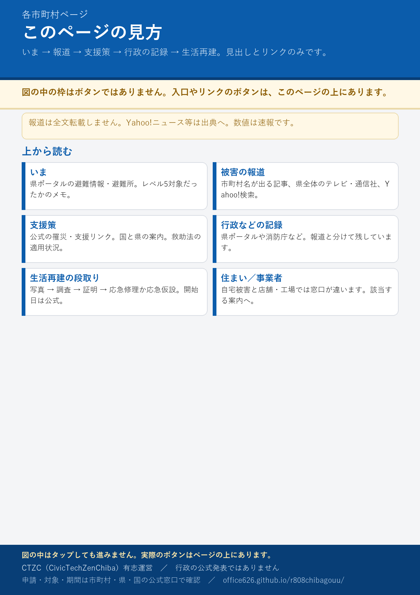

読み込み中
有志による要約です。申請は公式へ。数値は速報で変わります。報道は見出しとリンクのみで、記事全文は転載していません。
公式サイトへ 防災・災害ページ 住まいが被災した方へ 事業者が被災した方へ
いま
この市町村の被害に関する報道
Yahoo!ニュースやテレビ各社の記事へリンクします。内容の正誤は各社・公式で確認してください。
県全体の報道
インターネットで探す
新しい記事は日々出ます。市町村名で検索してください。
行政などの被害状況ログ
県防災ポータルや消防庁など、行政側の記録です。報道は上の欄にまとめています。
生活再建の段取り（共通の型）
避難・応急 → 災害救助法 → 被害状況調査 → 罹災証明書 → 応急仮設（家賃補助など）または被災住宅の応急修理
「いま申請できること」と「これから」は、各自治体の公式発表で確認してください。適用可否は各機関の判断です。
